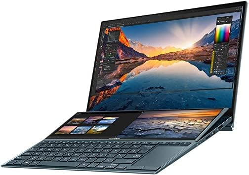

Perfil del usuario.
Los administradores trabajan gestionando proyectos, supervisando tareas, generando reportes y coordinando actividades dentro de organizaciones. Suelen utilizar software de oficina, herramientas de administración y gestión de proyectos, además de comunicarse a través de correos electrónicos y videollamadas.
Especificaciones Recomendadas.
Procesador:
- Intel Core i5 o AMD Ryzen 5. Estos procesadores proporcionan un buen rendimiento para manejar múltiples aplicaciones y tareas simultáneas.
RAM:
- 8 GB es suficiente para tareas de oficina y gestión de proyectos. Sin embargo, para manejar múltiples aplicaciones o tareas más pesadas, se recomienda 16 GB.
Almacenamiento:
- 256 GB SSD. Un SSD permite iniciar rápidamente el sistema y acceder a archivos y programas de forma rápida. Para grandes cantidades de datos o archivos, puede ser necesario un disco duro externo.
Gráficos:
- Gráficos integrados son más que suficientes para las tareas de administración cotidianas.
Pantalla:
- 14 a 15 pulgadas con resolución Full HD. Una pantalla clara y nítida es útil para manejar múltiples ventanas y mejorar la productividad.
Sistema operativo:
- Windows 10/11 o macOS. Dependiendo del entorno empresarial, uno u otro puede ser más adecuado, pero ambos son compatibles con la mayoría del software empresarial.
Nuestros consejos:
Accesorios:
- Un ratón y teclado ergonómicos son esenciales para largas sesiones de trabajo. También se recomienda una base de laptop para mejorar la postura.
Seguridad:
- Es crucial contar con un software antivirus robusto y realizar copias de seguridad regularmente, especialmente cuando se manejan datos sensibles de la empresa.
Presupuesto:
- El rango de precio puede variar entre $800 y $1,500 USD para una laptop de administración eficiente. Siempre considera opciones de servicio técnico y soporte postventa.
Necesidades Específicas.
Multitarea:
- Los administradores deben poder alternar entre aplicaciones de correo, hojas de cálculo, presentaciones y software de gestión sin problemas.
Trabajo de oficina:
- Aplicaciones como Microsoft Office o Google Workspace son herramientas clave para crear y gestionar documentos, hojas de cálculo y presentaciones.
Videollamadas:
- Es fundamental contar con una buena cámara y micrófono para reuniones virtuales a través de plataformas como Zoom o Microsoft Teams.
Gestión de proyectos:
- Software como Trello, Asana o Microsoft Project es utilizado para organizar y supervisar tareas y proyectos en equipo.
Portabilidad:
- Para quienes se desplazan o trabajan de manera remota, una laptop liviana y con buena batería es clave.
Opciones de dispositivos.

Laptops:
Para los administradores, las laptops ligeras y potentes son ideales. Algunas opciones recomendadas incluyen:
- Lenovo ThinkPad X1 Carbon: Ideal para largas jornadas laborales con un teclado ergonómico y un diseño liviano.
- HP Elite Dragonfly: Un ultrabook premium con excelente batería y diseño ligero.
- MacBook Air (M1/M2): Excelente rendimiento, ligereza y durabilidad de batería, ideal para tareas de gestión y proyectos.
PC de escritorio:
Si no es necesario el trabajo remoto, los PCs de escritorio ofrecen mayor rendimiento a menor precio:
- Dell Optiplex: Con excelente capacidad de expansión y soporte técnico empresarial.
- HP Envy Desktop: Una opción sólida para uso de oficina con múltiples configuraciones disponibles.
Nuestra perspectiva.
Elegir un computador para administradores requiere priorizar la capacidad de multitarea, rendimiento y facilidad de uso en entornos empresariales. Las laptops y PCs recomendadas ofrecen un buen balance de precio y rendimiento, permitiendo a los administradores maximizar su productividad en la oficina o en movimiento.